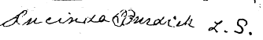

Statement by a close friend of Ellen G. White
Note: Lucinda Burdick and Ellen Harmon [White] were close friends during the mid-1840s. Mrs. Burdick, the wife of a pastor, had many opportunities to hear Mrs. White's prophecies. This eyewitness account by Mrs. Lucinda Burdick was given in 1908 and notarized at the bottom. Points to look for in her statement.
Statement of Mrs. Lucinda Burdick Concerning the Shut Door Visions of Ellen G. Harmon
I am of Free Will Baptist parentage and was converted to the religion of Jesus Christ when but a mere child.
The influence of the Adventist movement of 1843 and 1844 reached me, but I did not understand their arguments nor was I in any way identified with them until the year 1845.
I first heard of Miss Ellen G. Harmon (afterwards Mrs. Ellen G. White) in the early winter (Jan. or Feb.) of 1845 when my uncle Josiah Little came to my father's house and reported that he had seen one Ellen Harmon in the act of having visions which she claimed were given her of God. He said that she declares that God revealed to her that the door of mercy was closed forever, and that there was henceforth no salvation for sinners.
This caused me great uneasiness and anguish of mind for I had not been baptized and my youthful heart was much disturbed as to my salvation if the door of mercy was really closed.
During the year 1845 1 met Miss Ellen G. Harmon several times at my uncle's house in South Windham, Me. The first of these meetings was in the month of May, when I heard her declare that God had revealed to her that Jesus Christ would return to this earth in June, the next month. During the haying season I again met her in company with James White at the same place, and heard my uncle ask her about the failure of the Lord to appear in June, according to her visions, she replied that she had been told in the language of Canaan which she did not understand but that she had since come to understand that Christ would return in September, at the second growth of grass instead of the first.
During the autumn of 1845 I was again visiting at my uncle's Josiah Little, South Windham, Me. One Saturday night in October a party of six came to my uncle's house for entertainment over Sunday; among them James White and Ellen G. Harmon.
That night I roomed in company with Miss Mary E. Bodge and Miss Harmon. Ellen talked much about her visions and I expressed an earnest desire to see her have one. The next morning (Sunday) in the presence of myself and others, Miss Bodge reproved James White for traveling about with Ellen Harmon and charged him with bringing reproach and scandal upon the cause of Christ by persisting in such a course. He defended his course by claiming it his duty to carry her about that she might declare her visions. He angrily resented Miss Bodge's reproof, and disclaimed any intentions of marrying "that little deform thing" which were his exact words as he pointed to her sitting in a chair.
In the afternoon of this same Sunday, White preached at the home of Andrew Bodge about a half mile from my uncle's residence, and the whole burden of his sermon was that the door of mercy had been closed the tenth day of the seventh month in the year of 1844; that there was henceforth no salvation for sinners and that God was revealing himself to his people through visions.
Some time after the close of this afternoon service, Mary E. Bodge, Ellen G. Harmon and I went to a near by grove for a season of prayers, while I was engaged in prayer, suddenly, Ellen Harmon became rigidly prostrate upon the ground, Miss Bodge immediately sent for James White who she said, was the only one that could talk with her while in one of these spells. He and many others hurried to the spot and he immediately began to ask her a great variety of questions.
Her eyes remained open and assumed a glassy stare. Sometimes as she answered his question she would rise stiffly to a half sitting posture only to fall back rigidly prostrate upon the ground. Her position upon the ground seemed so uncomfortable that I placed her head in my lap and supported her thus throughout the event.
Many of the questions asked her by White were relative to the spiritual standing of people who lived in the surrounding country.
Some she declared were right with God while others had spots upon their garments.
It was noticeable that the spotted ones were those who rejected her visions or hesitated to accept them fully.
She even declared the destiny of the dead seeing some, who were named to bar by White, crowned with great glory and others rejected by God.
During this trance condition I heard Ellen G. Harmon declare that Jesus Christ had risen from the mercy seat and entered the Holy of Holies in Heaven, and that the door of mercy was shut forever and that the world was helplessly doomed. She also declared that the devil had taken possession of the mercy seat and was deceiving the people who were praying for the Holy Spirit, by casting upon them certain exhilarating influences which they mistook for the Spirit's power. These utterances she repeated several times.
This trance condition lasted more than an hour and some one suggesting that the gathering dew would cause them to take cold, White said, "I guess it will be the will of the Lord to bring her out", and immediately she arose and assumed her normal behavior.
Soon after this both confidence and interest in this fanatical couple vanished as the visions were not only childish and devoid of sense but absolutely contradictory. Considerable scandal was created by the intimacy of this man and woman, but the "talk" gradually subsided after their marriage in 1846 about a year after the incident just related.
Their influence and field of labor in Maine being lost they soon went out West where they succeeded in creating considerable interest and a large following through their sabbatarian teaching.
State of Connecticut, Fairfield, County, SS.,
Bridgeport, Sept. 26, 1908, A. D.
Personally appeared Lucinda Burdick, signer and sealer of the foregoing instrument and acknowledged the same to be a true statement of facts and her free act and deed, before me.
Main points of statement
- The door of mercy was shut forever and the world was helplessly doomed.
- Jesus would return in June of 1845.
- Jesus would return in September of 1845.
- Mrs. Bodge charged James White with scandal for traveling with Miss Harmon.
- James said that he would not "marry that little deformed thing."
- While in vision EGW saw some that were right with God and some had spots on their garments, were the ones that rejected her visions.
- The Devil had taken possession of the mercy seat.
- EGW visions are "childish and contradictory".
Robert K. Sanders, Founder and Editor of Truth or Fables, 1997–2012
Life Assurance Ministries assumed ownership of Truth or Fables in 2012
© 2016 Life Assurance Ministries. All rights reserved.
